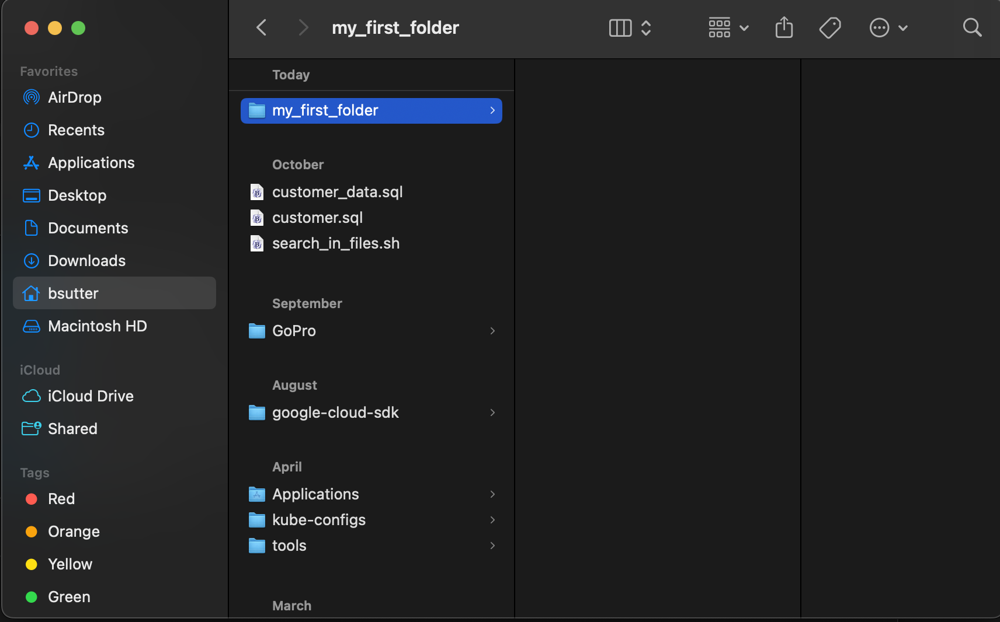
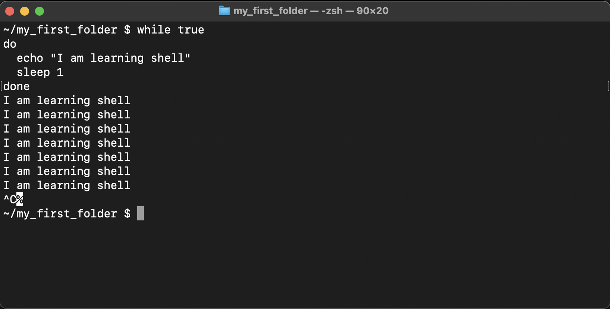
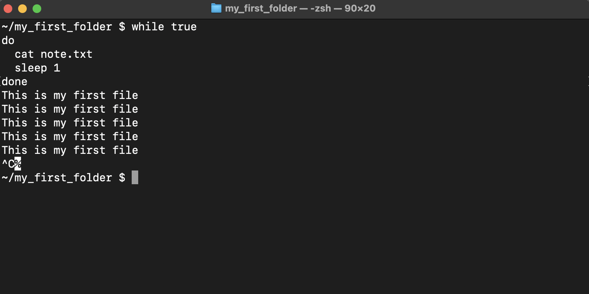
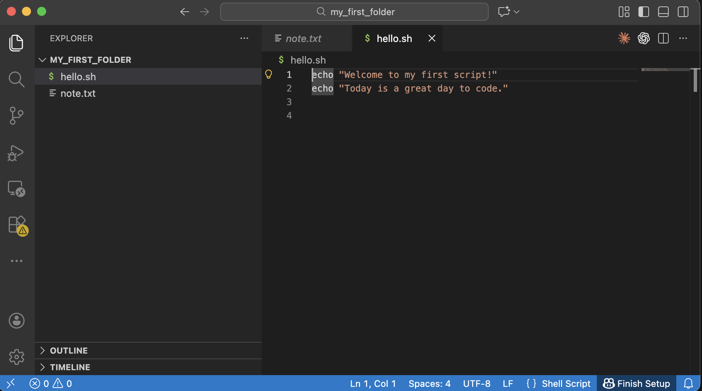
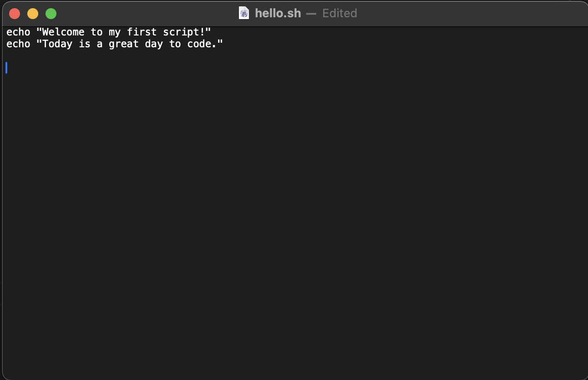
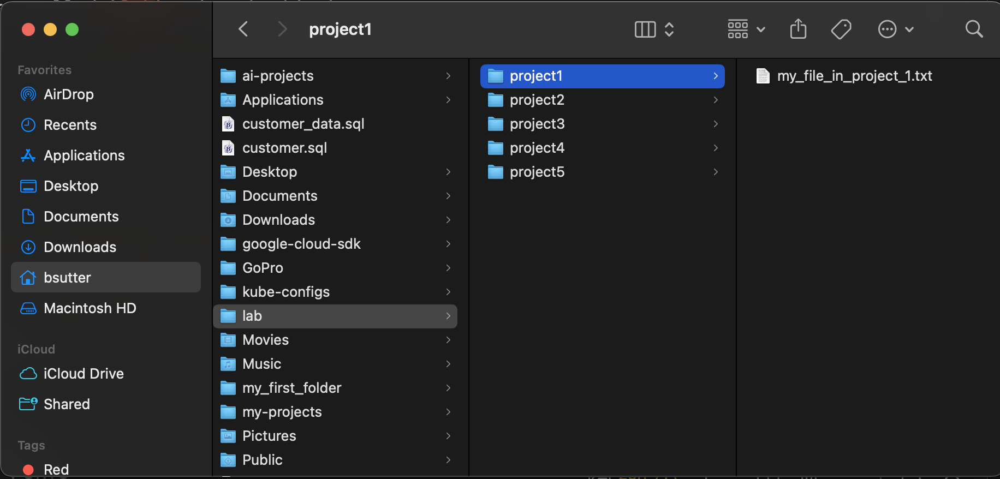
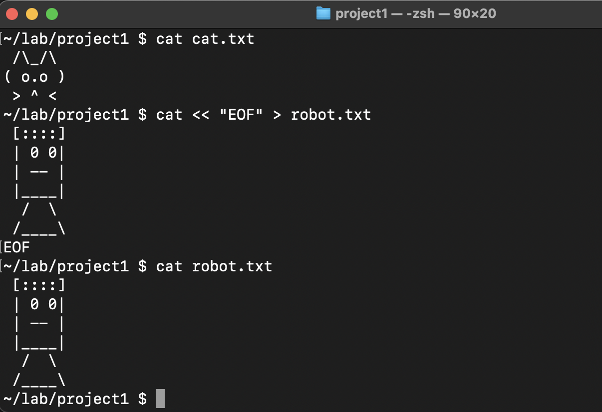

🖥️ Chapter 1 — Shell Commands 101: Becoming a Terminal Wizard
Level: Beginner
Theme: Talking to your computer like a pro
Tools: MacBook Air, Terminal (zsh)
Goal: Learn the core shell commands used by all developers.
⭐ Level 1 — “The Terminal is Your Superpower”
The Terminal lets you talk to your computer using text instead of clicking icons.
VS Code is used in this tutorial
You can install VS Code via the download or via brew
brew install --cask visual-studio-code
Open Terminal
Command-space and type terminal
🔍 Command #1 — pwd (Where am I?)
Stands for: Print Working Directory
Meaning: "Show me the exact folder I'm in."
Try it:
pwd
You’ll see something like:
/Users/myname
This is your current location in the computer.

📁 Command #2 — ls (What’s here?)
Meaning: "List all files and folders inside the current directory."
Try it:
ls
Useful flags:
ls -l # detailed list
ls -a # show hidden files
ls -lh # human readable sizes
📦 Command #3 — mkdir (Make a new folder)
Create a new folder:
mkdir my_first_folder
Check it:
ls
You should now see my_first_folder.
🚪 Command #4 — cd (Change Directory)
Enter a folder:
cd my_first_folder
ls
Check where you are:
pwd
Go back one directory:
cd ..
ls
Go to your home directory:
cd ~
ls
Go to the system root:
cd /
ls
Back to your home directory:
cd ~
ls
Open Finder
open .

Your screen will look different than mine since I have a lot more files/folders and customizations
Take a Screenshot
Command-Shift-4 then drag to lasso a region. Screenshots show up on the Desktop
ls ~/Desktop/
📝 Command #5 — echo (Make the computer speak)
cd ~/my_first_folder
Print text:
echo "Hello world"
Save text into a file:
echo "This is my first file" > note.txt
View the file:
ls
cat note.txt
Open VS Code in the curent working directory:
code .

Delete the file:
rm note.txt
See that it is gone
ls
Create it again
echo "This is my first file" > note.txt
Create, Read, Update, Delete - CRUD
Create a file (touch or echo "stuff" > file.txt) Read a file (cat) Update a file (VS Code) Delete a file (rm)
♻️ Bonus Magic — The while Loop
A loop repeats commands until you stop it.
A basic shell script - some programming!
Try this loop:
while true
do
echo "I am learning shell"
sleep 1
done
Stop or break with CTRL + C.

Another loop:
while true
do
cat note.txt
sleep 1
done

🚀 Example: Countdown Script
count=5
while [ $count -gt 0 ]
do
echo "Countdown: $count"
count=$((count - 1))
sleep 1
done
echo "Blast off"
🧪 Mini Project: Create Your First Shell Script
1. Create a file:
touch hello.sh
2. Open it to edit:
code hello.sh
You can also use the built-in text editor for MacOS
open -e hello.sh
Paste:
echo "Welcome to my first script!"
echo "Today is a great day to code."

OR

3. Back in Terminal, make it executable:
chmod +x hello.sh
4. Run it:
./hello.sh
You now have a reusable script, a program that can run commands again and again within the computer. This style scripting will work on Mac and Linux servers. The Linux servers are the ones running most of the Internet/Web sites as well as the backends for the mobile apps that you use every day.
🎯 Challenge Quests
Quest 1: Folder Factory
Within your home directory, create a folder called lab, then inside it create:
project1
project2
project3
project4
project5
Create a file in project1 called my_file_in_project_1.txt

Quest 2: Mega Loop
Print your name 20 times using a while loop.
Quest 3: Echo Art
Use echo to create ASCII art inside a file.
echo " /\\_/\\
( o.o )
> ^ <" > cat.txt
This create a file called cat.txt
cat cat.txt
cat << "EOF" > robot.txt
[::::]
| 0 0|
| -- |
|____|
/ \
/____\
EOF
cat robot.txt

Quest 4: Explorer Mode
Navigate to your Documents folder using only:
cd
cd ..
pwd
ls
🎓 End of Chapter 1
You now know the essential commands:
- pwd
- ls
- mkdir
- cd
- echo
- while
- cat
- Redirecting output (>)
- Running scripts (./file.sh)
Next up:
👉 Chapter 2 — Environment Variables, PATH, and Shell Scripts